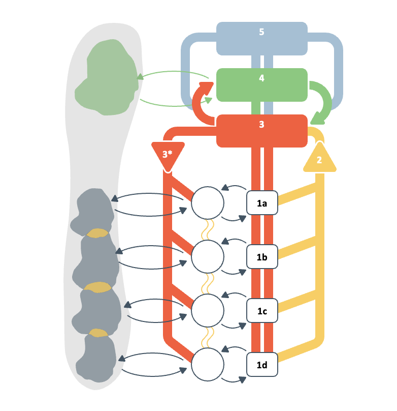

Choose a VSM system
The original VSM diagram is the working surface.

Selected: S3 · ControlAssign SCTs that negotiate resources, monitor performance, and intervene when agreed results are at risk.
Select a VSM system in the diagram, then assign the SCT contributions that bring that system to life. Inspect whether the resulting steering response fits the variety identified in Step II.
Multiple VSM-system assignments are allowed. The switch controls whether operative S1 is included in the inspection.
The original VSM diagram is the working surface.

Resource bargain, performance monitoring, and operational intervention.